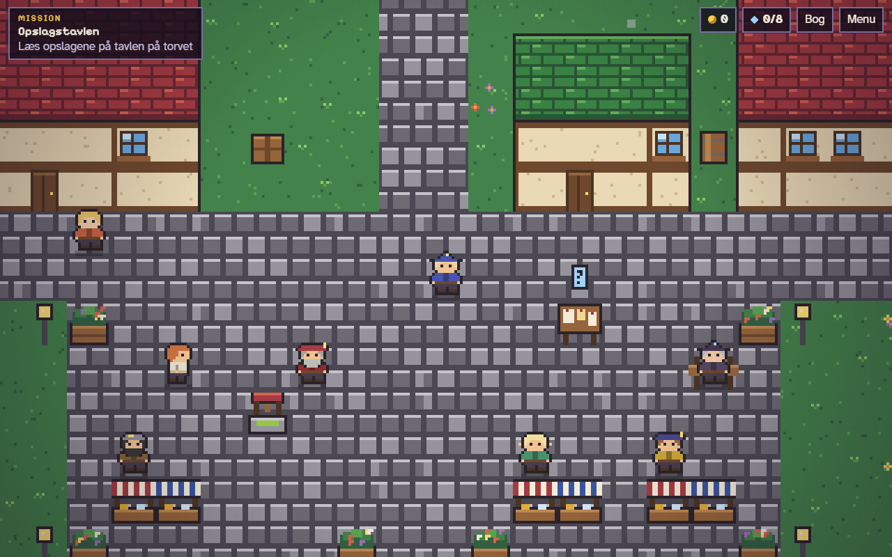
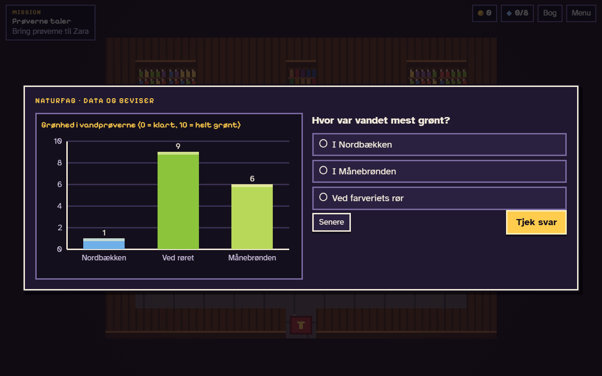
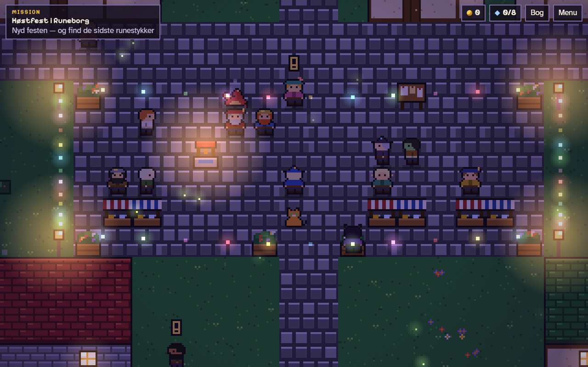
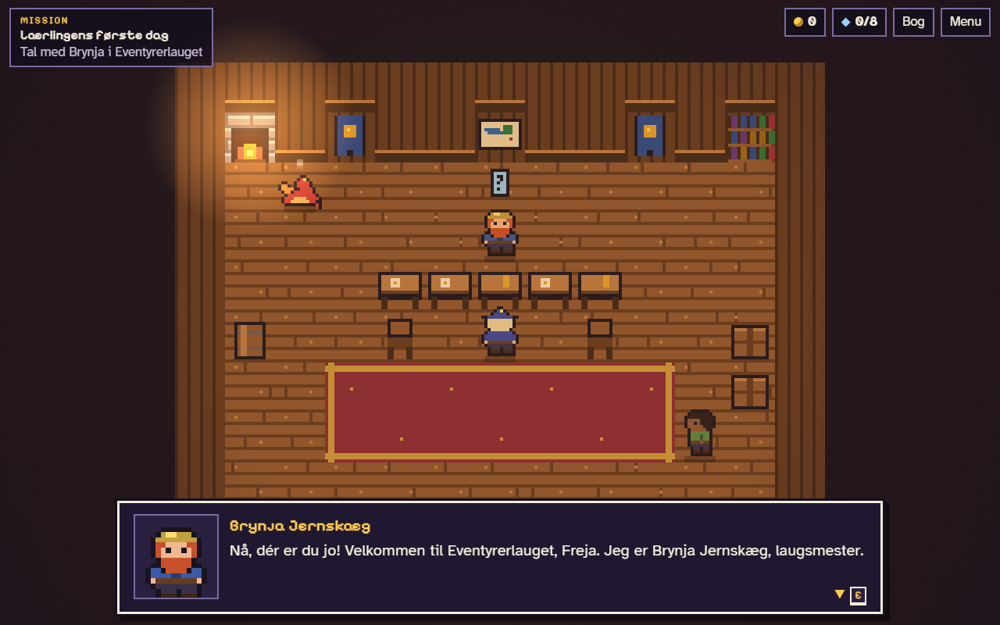
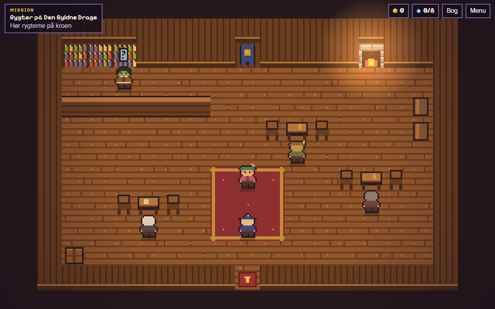

Ingen karakterer
Danske børn får ikke karakterer før 8. klasse, og så skal et spil til en 9-årig heller ikke give dem. Fremgang vises som Regnekraft, og til sidst som en liste over det, man kan nu.
Nyt spil · 5.-9. klasse
Vandet i byens brønd er blevet grønt, og borgmesteren giver heksen skylden. Som lærling i Eventyrerlauget opklarer man sagen med læsning, kildekritik, fair forsøg, data og regning — i en hyggelig 8-bit fantasyby.
Gratis · ingen reklamer · kører direkte i browseren · til de yngste: Regnehelten

Hvorfor vi laver det her
Barnet får et stykke, taster et svar og får en stjerne. Det er ikke et spil — det er lektier med animation. Vi bygger det omvendt: først en verden, man har lyst til at være i, og så matematikken ind i den, der hvor den hører hjemme.
Danske børn får ikke karakterer før 8. klasse, og så skal et spil til en 9-årig heller ikke give dem. Fremgang vises som Regnekraft, og til sidst som en liste over det, man kan nu.
Otte forskellige slags opgaver: skriv svaret, find alle, få vægten i balance, byg et regnestykke, betal med de rigtige mønter. Det er ikke det samme tekstfelt igen og igen.
Sidder man fast, slår man op i Regnebogen — en rigtig lille matematikbog med forklaring, eksempel og tegning. Den åbner på den side, opgaven handler om. Man skal ikke råbe på en voksen.

Læsning, naturfag og matematik for 5.-9. klasse
Byen summer af rygter, og det er lærlingens job at finde ud af, hvad der faktisk passer. Man læser opslag, skiller fakta fra holdninger, tager vandprøver og tolker data. Indholdet bygger på de områder, hvor danske elever klarede sig dårligst i PISA 2025.

Matematik for 1.-6. klasse
En helt almindelig skoledag, fra sengekanten til sidste time. Seks steder, seks slags matematik, en sidehistorie om at turde svare igen. Undervejs er der sidemissioner, ting man kan samle, og to pausespil, man kan låse op.
Sådan kommer I i gang
Mens spillene er til test, opretter en voksen en gratis konto som skole eller familie. Det tager et par minutter.
Børnene sættes på med et kaldenavn, og hvert barn får sin egen kode som RAVN-4827. Så kan ingen komme ind som en anden. Ingen mail, intet kodeord.
Runeborg til 5.-9. klasse, Regnehelten til 1.-6. Begge kører direkte i browseren på computer og tablet. Der er ingenting at installere og ingenting at betale.
Kig med





Til forældre og lærere
Barnet har hverken mailadresse eller kodeord. Om barnet gemmer vi kun det kaldenavn, en voksen har skrevet, og hvor længe der er spillet. Den voksne, der opretter testkontoen, oplyser navn og mail. Der er ingen reklamer, ingen analyseværktøjer, ingen sporing og ingen køb inde i spillene.
Mens Regnehelten er til test, sender spillet desuden et kort resultat hjem, så vi kan se, om opgaverne passer til klassetrinnet.